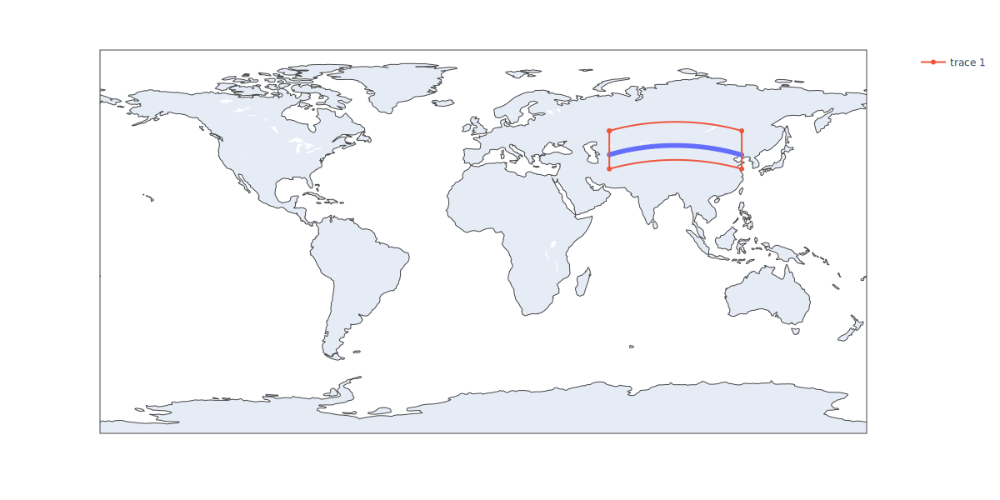

Custom Window Generation¶
In this notebook, we will:
Create interval windows for custom events
Eclipse windows
AOI intersection
import plotly.express as px
import pandas as pd
from ostk.mathematics.geometry.d2.object import Point as Point2d
from ostk.mathematics.geometry.d2.object import Polygon as Polygon2d
from ostk.mathematics.curve_fitting import Interpolator
from ostk.physics.environment.object.celestial import Earth
from ostk.physics.environment.object.celestial import Sun
from ostk.physics.environment.gravitational import Earth as EarthGravitationalModel
from ostk.physics.environment.atmospheric import Earth as EarthAtmosphericModel
from ostk.physics.environment.magnetic import Earth as EarthMagneticModel
from ostk.physics.time import Instant
from ostk.physics.time import Duration
from ostk.physics.time import Interval
from ostk.physics.coordinate import Frame
from ostk.physics.coordinate import Position
from ostk.physics.coordinate import Velocity
from ostk.physics import Environment
from ostk.physics.coordinate.spherical import LLA
from ostk.astrodynamics.solver import TemporalConditionSolver
from ostk.astrodynamics.trajectory.orbit.model import Tabulated
from ostk.astrodynamics.trajectory.state import NumericalSolver
from ostk.astrodynamics.trajectory import State
from ostk.astrodynamics.trajectory import Propagator
Setup an initial state
start_instant = Instant.J2000()
initial_state = State(
instant=start_instant,
position=Position.meters([7000000.0, 0.0, 0.0], Frame.GCRF()),
velocity=Velocity.meters_per_second(
[0.0, 5335.865450622126, 5335.865450622126], Frame.GCRF()
),
)
analysis_interval = Interval.closed(
start_instant=initial_state.get_instant(),
end_instant=initial_state.get_instant() + Duration.days(2.0),
)
Window generation¶
To create windows we must first
generate a state provider, like
a tabulated model made from propagated states (ideal)
a propagated model
a kepler model
etc.
define your condition that accepts an Instant and returns a boolean
Create a model¶
Here, we create a tabulated model by propagating states till the end of your analysis interval
earth = Earth.from_models(
gravity_model=EarthGravitationalModel(EarthGravitationalModel.Type.Spherical),
magnetic_model=EarthMagneticModel(EarthMagneticModel.Type.Undefined),
atmospheric_model=EarthAtmosphericModel(EarthAtmosphericModel.Type.Undefined),
)
environment = Environment(
instant=Instant.J2000(),
objects=[earth, Sun.default()],
)
propagator = Propagator.from_environment(
numerical_solver=NumericalSolver.default_conditional(),
environment=environment,
)
propagator.calculate_state_at(
state=initial_state,
instant=analysis_interval.get_end(),
)
tabulated = Tabulated(
states=propagator.access_numerical_solver().get_observed_states()[1:],
initial_revolution_number=0,
interpolation_type=Interpolator.Type.BarycentricRational,
)
Define our solver¶
solver = TemporalConditionSolver(
time_step=Duration.seconds(10.0),
tolerance=Duration.milliseconds(1.0),
)
Define our condition¶
Eclipse condition
def eclipse_condition(instant):
state = tabulated.calculate_state_at(instant)
environment.set_instant(state.get_instant())
return environment.is_position_in_eclipse(state.get_position())
eclipse_windows = solver.solve(condition=eclipse_condition, interval=analysis_interval)
print(*eclipse_windows[:3])
-- Interval ----------------------------------------------------------------------------------------
Start: 2000-01-01 12:09:00.876.434.537 [UTC]
End: 2000-01-01 12:43:26.401.005.589 [UTC]
----------------------------------------------------------------------------------------------------
-- Interval ----------------------------------------------------------------------------------------
Start: 2000-01-01 13:46:10.569.197.788 [UTC]
End: 2000-01-01 14:20:36.125.086.673 [UTC]
----------------------------------------------------------------------------------------------------
-- Interval ----------------------------------------------------------------------------------------
Start: 2000-01-01 15:23:20.262.382.223 [UTC]
End: 2000-01-01 15:57:45.848.618.256 [UTC]
----------------------------------------------------------------------------------------------------
Imaging AOI intersection
AOI = [
[59.163411994221235, 52.03687119546126],
[59.163411994221235, 34.16890408047914],
[121.33841912739558, 34.16890408047914],
[121.33841912739558, 52.03687119546126],
[59.163411994221235, 52.03687119546126],
]
target_geometry = Polygon2d(
[Point2d(float(coordinates[0]), float(coordinates[1])) for coordinates in AOI]
)
def aoi_intersection_condition(instant):
state = tabulated.calculate_state_at(instant)
lla = LLA.cartesian(
cartesian_coordinates=state.get_position().get_coordinates(),
ellipsoid_equatorial_radius=EarthGravitationalModel.EGM2008.equatorial_radius,
ellipsoid_flattening=EarthGravitationalModel.EGM2008.flattening,
)
point = Point2d(lla.get_longitude().in_degrees(), lla.get_latitude().in_degrees())
return target_geometry.contains(point)
imaging_windows = solver.solve(
condition=aoi_intersection_condition, interval=analysis_interval
)
print(*imaging_windows[:5])
-- Interval ----------------------------------------------------------------------------------------
Start: 2000-01-01 12:17:02.410.496.646 [UTC]
End: 2000-01-01 12:29:30.108.716.099 [UTC]
----------------------------------------------------------------------------------------------------
-- Interval ----------------------------------------------------------------------------------------
Start: 2000-01-01 13:54:10.927.731.242 [UTC]
End: 2000-01-01 14:06:38.626.071.132 [UTC]
----------------------------------------------------------------------------------------------------
-- Interval ----------------------------------------------------------------------------------------
Start: 2000-01-01 15:31:19.444.465.902 [UTC]
End: 2000-01-01 15:43:47.143.434.480 [UTC]
----------------------------------------------------------------------------------------------------
-- Interval ----------------------------------------------------------------------------------------
Start: 2000-01-01 17:08:27.961.799.855 [UTC]
End: 2000-01-01 17:20:55.660.298.627 [UTC]
----------------------------------------------------------------------------------------------------
-- Interval ----------------------------------------------------------------------------------------
Start: 2000-01-01 18:45:36.479.037.374 [UTC]
End: 2000-01-01 18:58:04.177.334.947 [UTC]
----------------------------------------------------------------------------------------------------
def get_nadir_track(window, time_step=Duration.seconds(15.0)):
instants = window.generate_grid(time_step)
states = tabulated.calculate_states_at(instants)
llas = []
for state in states:
lla = LLA.cartesian(
state.get_position().get_coordinates(),
EarthGravitationalModel.EGM2008.equatorial_radius,
EarthGravitationalModel.EGM2008.flattening,
)
llas.append(
{
"lon": float(lla.get_longitude().in_degrees()),
"lat": float(lla.get_latitude().in_degrees()),
}
)
return llas
geodetic_coordinates = get_nadir_track(imaging_windows[0])
figure = px.scatter_geo(
pd.DataFrame(geodetic_coordinates),
lon="lon",
lat="lat",
height=600,
width=1200,
)
figure.add_scattergeo(
lon=[float(line.x()) for line in target_geometry.get_outer_ring()],
lat=[float(line.y()) for line in target_geometry.get_outer_ring()],
mode="markers+lines",
)
figure.show("svg")
